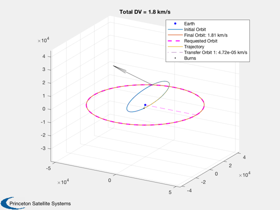
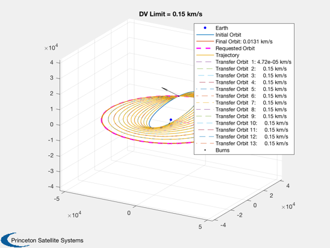
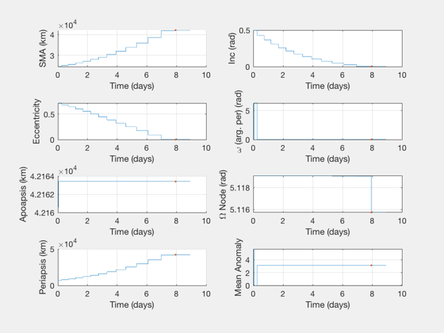

Contents
Optimal single-rev impulsive burns for GTO to GEO transfer.
This is a transfer with a single optimal burn at apogee. Compare the optimizer output to the analytical solution and plot a trajectory performed in a series of delta-V's.
See also: OptimizeImpulsiveLVLH, TargetElementsImpulsiveAnalytic, VOrbit, OptimizerReport, PlotImpulsiveTrajectory, TargetElementsPlaneSecond
%-------------------------------------------------------------------------- % Copyright (c) 2018,2019 Princeton Satellite Systems, Inc. % All rights reserved. %-------------------------------------------------------------------------- % Target: GEO elFinal = [42164 0 0 0 0 0]; % Highly eccentric GTO orbit; inclination = azimuth of launch sma = 24582; inc = 28.6*pi/180; ecc = elFinal(1)/sma - 1; elInitial = [24580 inc 2*pi*rand(1) 0 ecc 2*pi*rand(1)]; % Analytic Solution - one burn vGEO = VOrbit(elFinal(1)); vGTO = VOrbit(elInitial(1)*(1+ecc),elInitial(1)); % apogee DV = sqrt( vGTO^2 + vGEO^2 - 2*vGTO*vGEO*cos(inc)); fprintf('Analytic DV: %g km/s\n',DV) % Constants lvlhFrame = OTFrame('lvlh');
Analytic DV: 1.81304 km/s
Analytic targeting
Both options can produce the optimal burn
% Change plane first - all options [burns0,dVs] = TargetingAnalyticAll( elInitial, elFinal ) % display the lowest DV option burns0{1,2} % Change plane second - two options [burns1] = TargetElementsPlaneSecond( elInitial, elFinal, lvlhFrame )
burns0 =
2×2 cell array
{3×4 double} {2×4 double}
{2×4 double} {3×4 double}
dVs =
2.244598665314740 1.813267650552961
6.316309333217211 6.316421371389054
ans =
Columns 1 through 3
1.813205108396679 -2.734921738217672 1.122781892324548
0.000062542156282 0.406670915390845 1.570796326794897
Column 4
0.594208069302781
0.500000000000000
burns1(:,:,1) =
Columns 1 through 3
1.434052320052856 0.000000000000000 0
1.518863615570352 3.141592501929054 -1.321254144863145
Column 4
0.594208062924381
0.500000000000000
burns1(:,:,2) =
Columns 1 through 3
0.000057244954782 0 0
1.813108405826080 0.000000000000001 0.947167913041045
Column 4
0.094208062924381
0.500000000000000
Impulse solution search; <1 sec
burnsTarget = TargetElementsImpulsiveAnalytic(elInitial,elFinal) tic fprintf('\nOptimizing with analytic targeting (LVLH)...') [burns1,elOut,opt] = OptimizeImpulsiveLVLH(elInitial,elFinal); toc disp('...finished.') DispWithTitle(burns1,'burns1'); dVopt = sum(burns1(:,1)); OptimizerReport(opt) fprintf('\nError in DV from analytic: %g km/s\n',dVopt-DV); PlotImpulsiveTrajectory(elInitial, burns1, elFinal,lvlhFrame); titleStr = sprintf('Total DV = %.2g km/s',sum(burns1(:,1))); title(titleStr)
burnsTarget =
Columns 1 through 3
4.882306509178984 0.406670915372121 2.892010570554604
0.000057244954778 0.406670915372121 1.570796326794897
1.433988684275790 -2.734921738217672 1.570796326794897
Column 4
0.094208062924381
0
0.500000000000000
Optimizing with analytic targeting (LVLH)...Elapsed time is 0.377189 seconds.
...finished.
burns1
Columns 1 through 3
0.000047244965707 0.000159404132643 0.000099585123922
1.813108406459686 -0.000000037990862 0.947167913768969
Column 4
0.094194232932735
0.500013828579802
Total Delta-V (km/s):
1.813155651425393
Number of burns:
2
Initial elements, target, achieved:
1.0e+04 *
Columns 1 through 3
2.458000000000000 0.000049916416607 0.000511905989576
4.216400000000000 0 0
4.216332297713937 0.000000000337221 0.000511905989581
Columns 4 through 6
0 0.000071523879261 0.000569125859040
0 0 0
0.000000709696373 0.000000000184346 0.000313449566364
Mission duration:
6.3307 Time (hours)
Cost value:
1.813155651425393
Iterations:
82
Error in DV from analytic: 0.000119653 km/s
 Implement with a DV limit per rev
burnMaxDeltaV = 0.15; burnsL = BreakImpulsesByDeltaV(burns1,burnMaxDeltaV,elInitial); PlotImpulsiveTrajectory(elInitial, burnsL, elFinal, lvlhFrame); titleStr = sprintf('DV Limit = %.2g km/s',burnMaxDeltaV); title(titleStr) PlotElementsImpulsive(elInitial, burnsL, lvlhFrame); %-------------------------------------- 